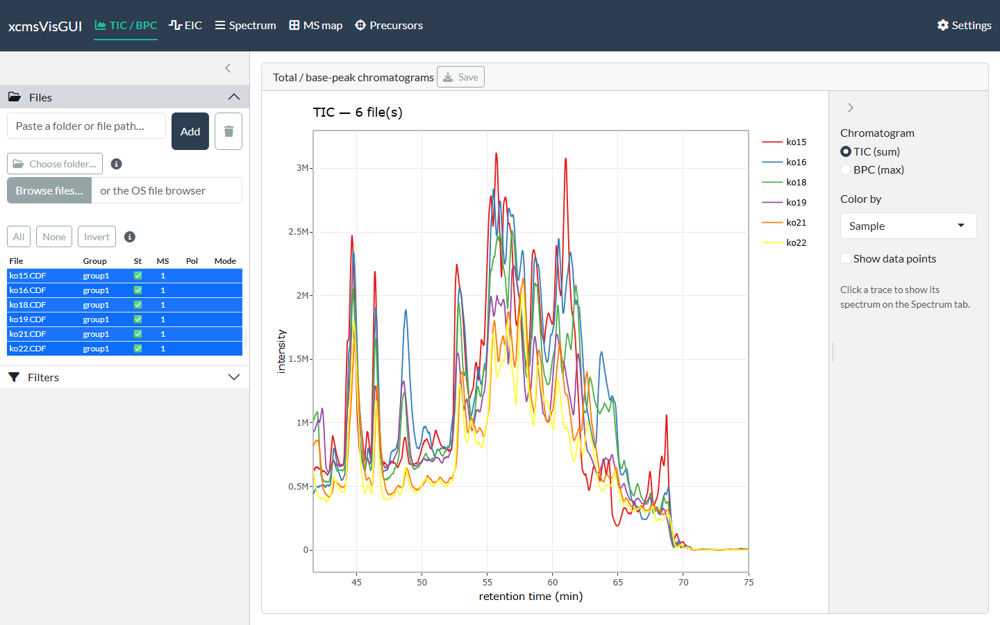
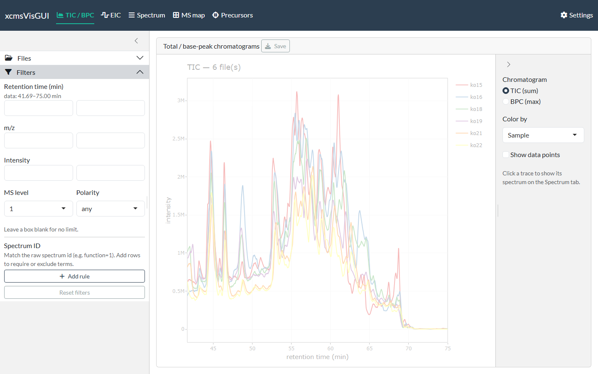
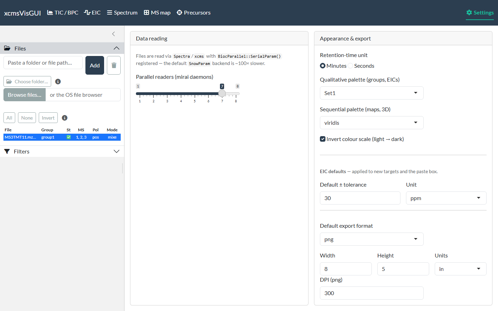

xcmsVisGUI is a local Shiny desktop app for exploring raw LC-MS data interactively — TIC/BPC, extracted-ion chromatograms, spectra (with adduct / isotope / fragment annotation), 2D/3D maps and DDA precursors. Scope is raw visualisation only: no peak picking, grouping or alignment.
This page covers the cross-cutting basics — launching, loading files, filtering, settings and export. Each plot view then has its own guide:
- TIC / BPC — total- and base-peak chromatograms
- EIC — extracted-ion chromatograms
- Spectrum — single spectra, the scan-list browser, and annotation
- MS map — 2D and 3D m/z × time maps
- Precursors — DDA precursor-ion map
The screenshots come from example LC-MS runs — a positive-mode QTOF
urine series and the faahKO / msdata demo
datasets that ship with Bioconductor.
Launch
Install it first (see the README), then
the app is the exported function run_app():
# installed:
xcmsVisGUI::run_app()
# or from a clone (no install needed):
# Rscript run.RA browser tab opens with five plot views across the top (TIC/BPC, EIC, Spectrum, MS map, Precursors), a Settings page, and a left sidebar with Files and Filters. The sidebar and filters apply to every view.
1. Load files
Open the Files panel and add data three ways — all keep multi-GB files in place (no copy) except the OS file browser:
-
Paste a folder or file path and click
Add — loads every MS file in a folder
(
.mzML/.mzXML/.CDF), or a single file if you paste a file path. - Choose folder… — native OS folder dialog (Windows), no copy.
- Browse files… — the OS file dialog; note it copies the chosen files to a temp folder.
Files are read asynchronously (a status badge flips from ⏳ to ✅), so the UI stays responsive even with many files. Click a file’s row to include it in the plots (the row highlights); click it again to exclude. Files stay loaded either way, so toggling is cheap. All / None / Invert select in bulk, and double-clicking the Group cell renames that file’s sample group (used for colouring and faceting). As soon as one file is included, the TIC renders:

2. Filter (optional)
The Filters panel applies globally to every view. Leave a box blank for no limit; retention-time boxes use the display unit (set in Settings) and the data range is shown as a hint.

You can constrain retention time, m/z, intensity, MS level
and polarity. The Spectrum ID section matches against
the raw spectrum id (e.g. the Waters
function=1 process=0 scan=…): add one or more rules with
Add rule, each set to contains (the id
must include the term) or exclude (it must not).
Multiple contains rules are ANDed, so you can keep
e.g. function=1 while excluding function=2.
Matching is a literal substring (so scan=1 also matches
scan=10, scan=199, …). Reset
filters clears everything. If a filter combination matches no
spectra, the plots show “No spectra match the current filters.” rather
than an error.
Moving between tabs
The views are linked through clicks, so you rarely retype a number:
- Click a chromatogram trace (TIC/BPC or EIC), a map pixel (MS map) or a precursor (Precursors) and the Spectrum tab is loaded with that file and retention time — switch to the Spectrum tab to view it.
- Click a peak in a spectrum to add its m/z to the EIC target list (the default), then open the EIC tab to extract it across files.
Each view’s guide spells out its own click actions.
Settings
Settings persist across restarts (stored in your per-user config directory):
- Retention-time unit — minutes or seconds (applied everywhere; data is always handled in seconds internally).
- Palettes — ColorBrewer qualitative (traces/groups) and viridis/sequential (maps); the scale can be inverted.
- EIC defaults — default tolerance value and unit for new targets.
- Parallel readers — the mirai daemon-pool size for async file reading.
- Export defaults — format (png/svg/pdf), size, units, DPI.
